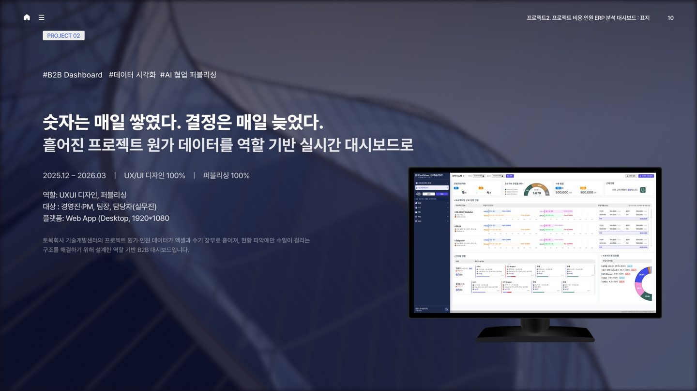
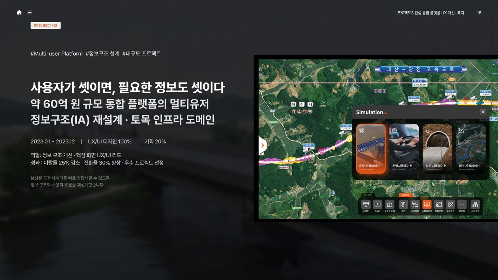
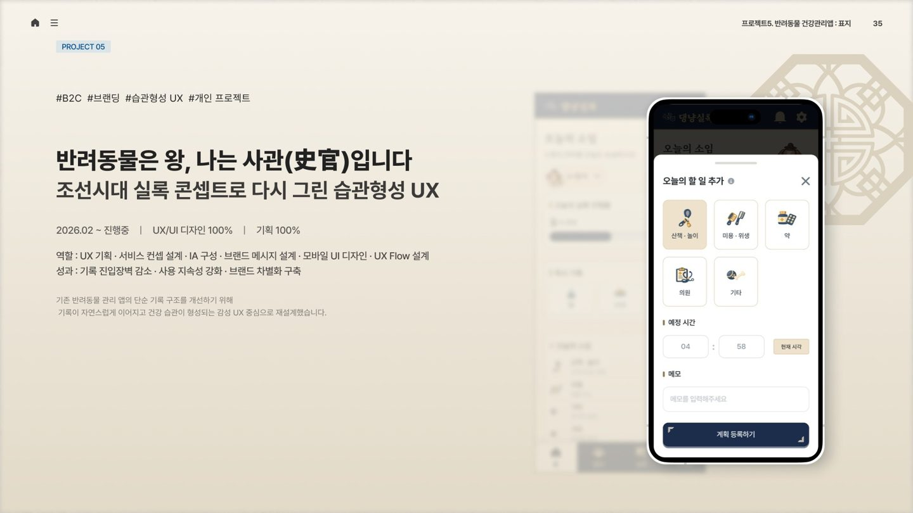
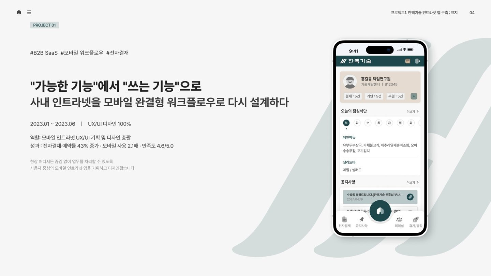
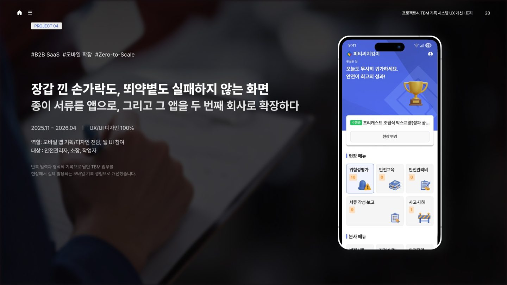
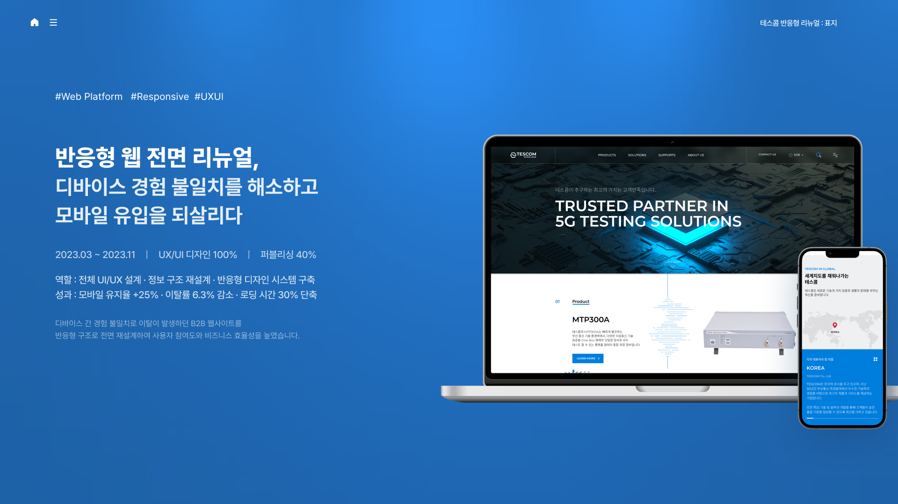
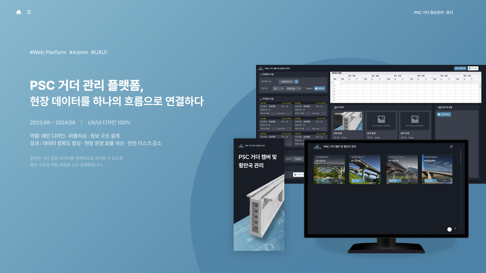

UX/UI DESIGNER · 6 YEARS · B2B & DATA UX
복잡한 업무와 데이터를,
다음 행동이 보이는 구조로.
B2B 플랫폼, 대시보드, 모바일 서비스를 설계하며
복잡한 업무와
데이터 흐름을 정리하고,
사용자가 더 빠르게 판단하고 실행할 수
있는 경험으로 바꿔왔습니다.
UX STRATEGY · IA · UI · DESIGN SYSTEM · HTML/CSS
01 — 디자인 관점
복잡한 업무와 데이터가 얽힌 환경에서,
사용자가
빠르게 판단하고 실행할 수 있는 경험을 설계합니다.
Selected impact from production projects
02 — 대표 프로젝트
2023—2026
실시간 운영
의사결정 대시보드
흩어진 프로젝트 데이터를 역할과 위험도 기준으로 재구성해, 보고서를 확인하기 전에 이상 징후를 발견하도록 설계했습니다.
Project Cost & Workforce Dashboard
수동 취합 → 실시간 위험 감지


멀티 유저 B2B 플랫폼
정보구조 재설계
서로 다른 목적의 사용자가 하나의 플랫폼에서 필요한 정보를 빠르게 찾도록 탐색 구조를 재설계했습니다.
Construction Integrated Platform탐색 5.4→2 · 이탈률 25%↓ · 전환율 30%↑
프로젝트 자세히 보기 ↗
기록을 습관으로 만드는
반려동물 건강관리 UX
쉽게 미뤄지는 건강 기록을 빠른 입력과 즉각적인 보상이 이어지는 경험으로 바꿨습니다.
Dangnyangsilrok · Personal Product Project프로젝트 자세히 보기 ↗04—07 · 추가 프로젝트
모바일 · 현장 · 반응형 웹 · 데이터 플랫폼
모바일 업무 포털
예약 UX 개선
Hanmac Mobile Intranet

05 · MOBILE UX / WORKFLOW / FIELD PRODUCT현장 기록의
모바일 전환 UX
TBM Safety Record System

06 · RESPONSIVE WEB / UI RENEWAL디바이스 경험을 연결한
반응형 웹 전면 리뉴얼
5G Testing Solutions Website

07 · B2B PLATFORM / FIELD DATA현장 데이터를 연결한
PSC 거더 관리 플랫폼
PSC Girder Management Platform

03 — 소개와 실행
문제를 정의하고,
구현까지 이어지는 답을 만듭니다.
복잡한 업무형 제품을 구조화하고, 실제 구현과 운영까지 이어지는 경험을 설계해왔습니다.
문제 정의와 IA·User Flow부터 UI, 디자인 시스템, 퍼블리싱까지 구현 과정을 이해하며 개발자와 협업합니다.
개발 커뮤니케이션 비용 절감
프로젝트 일정 단축
지식재산권 등록
04 — 연락처